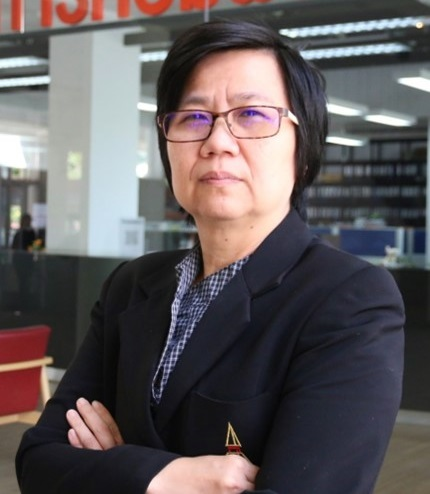
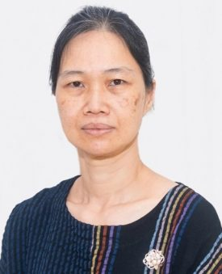
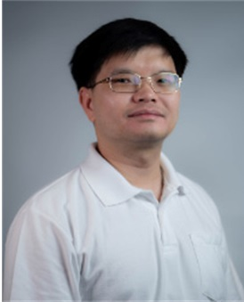

รายชื่อการติดต่ออาจารย์ คณะวิทยาศาสตร์และเทคโนโลยี มหาวิทยาลัยธรรมศาสตร์ ศูนย์รังสิต
นายรักโดม ธรรมศาสตร์
6309123567
รศ.ดร.เยาวดี เต็มธนาภัทร์ ผศ.ดร.กษิดิศ ชาญเชี่ยว รศ.ดร.ณัฐธนนท์ หงส์วริทธิ์ธร อาคาร LC-2 ชั้น 2 ห้อง 210 อาคาร LC-2 ชั้น 2 ห้อง 210 อาคาร LC-2 ชั้น 2 ห้อง 210 02-564-4444 ต่อ 2157 ต่อ 208 02-564-4444 ต่อ 2157 ต่อ 200 02-564-4444 ต่อ 2157 ต่อ 229 tyaowade@staff.tu.ac.th ckasidit@staff.tu.ac.th nuttanon@staff.tu.ac.th
ผศ.ดร.เด่นดวง ประดับสุวรรณ ผศ.ดร.ทรงศักดิ์ รองวิริยะพานิช ผศ.ดร.ปกรณ์ ลี้สุทธิพรชัย อาคาร LC-2 ชั้น 2 ห้อง 210 อาคาร LC-2 ชั้น 2 ห้อง 223 อาคาร LC-2 ชั้น 2 ห้อง 210 02-564-4444 ต่อ 2157 ต่อ 203 02-564-4444 ต่อ 2157 ต่อ 204 02-564-4444 ต่อ 2157 ต่อ 206 denduang@staff.tu.ac.th rongviri@staff.tu.ac.th pakornl@staff.tu.ac.th 
ผศ.ดร.วิลาวรรณ รักผกาวงศ์ ผศ.ดร.วรวรรณ ดีอัซ การ์บาโย ผศ.ดร.ธนาธร ทะนานทอง อาคาร LC-2 ชั้น 2 ห้อง 210 ประจำที่ศูนย์ลำปาง อาคาร LC-2 ชั้น 2 ห้อง 210 02-564-4444 ต่อ 2157 ต่อ 216 0-5426-8701 ต่อ 5626 02-564-4444 ต่อ 2157 ต่อ 207 wilawan@cs.tu.ac.th papong@staff.tu.ac.th tanatorn@staff.tu.ac.th
ผศ.ดร.อรจิรา สิทธิศักดิ์ ผศ.ดร.วิรัตน์ จารีวงศ์ไพบูลย์ ผศ.ดร. เสาวลักษณ์ วรรธนาภา อาคาร LC-2 ชั้น 2 ห้อง 210 อาคาร LC-2 ชั้น 2 ห้อง 210 อาคาร LC-2 ชั้น 2 ห้อง 211 02-564-4444 ต่อ 2157 ต่อ 202 02-564-4444 ต่อ 2157 ต่อ 215 02-564-4444 ต่อ 2157 ต่อ 214 onjira@staff.tu.ac.th wirat@staff.tu.ac.th wsaowalu@staff.tu.ac.th
ผศ.ดร.มนวรรัตน์ ผ่องไพบูลย์ ผศ.ดร. วนิดา พฤทธิวิทยา อ.ดร.ปกป้อง ส่องเมือง อาคาร LC-2 ชั้น 2 ห้อง 210 อาคาร LC-2 ชั้น 2 ห้อง 210 อาคาร LC-2 ชั้น 2 ห้อง 210 02-564-4444 ต่อ 2157 ต่อ 219 02-564-4444 ต่อ 2157 ต่อ 230,226 02-564-4444 ต่อ 2157 ต่อ 213 pmonvora@staff.tu.ac.th wanidap@cs.tu.ac.th pokpongs@staff.tu.ac.th 
ผศ.ดร.ประภาพร รัตนธำรง อ.นุชชากร งามเสาวรส อาจารย์สิริกันยา นิลพานิช อาคาร LC-2 ชั้น 2 ห้อง 210 อาคาร LC-2 ชั้น 2 ห้อง 210 อาคาร LC-2 ชั้น 2 ห้อง 211 02-564-4444 ต่อ 2157 ต่อ 225 02-564-4444 ต่อ 2157 ต่อ 228 02-564-4444 ต่อ 2157 ต่อ 218 rattanat@staff.tu.ac.th nng@cs.tu.ac.th skn@cs.tu.ac.th 
อ.ดร.กฤตคม ศรีจิรานนท์ อ.ปกรณ์ แววสว่างวงศ์ อ.ดร.ลัมพาพรรณ พันธ์ชูจิตร์ อาคาร LC-2 ชั้น 2 ห้อง 224 0-5426-8701 ต่อ 5625 02-546-4444 ต่อ 2157 ต่อ 224 ch_krit@staff.tu.ac.th wpakorn@staff.tu.ac.th lumpapun_@sci.tu.ac.th
อ.ดร.ฐาปนา บุญชู อ.ดร.นุชจรินทร์ อินต๊ะหล้า อาคาร LC-2 ชั้น 2 ห้อง 222 อาคาร LC-2 ชั้น 2 02-564-4444 ต่อ 213 02-564-4444 ต่อ 2157 ต่อ 222 thapana@cs.tu.ac.th njrin@tu.ac.th Top